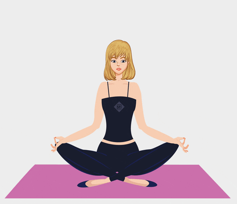
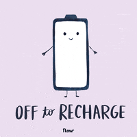

People need breaks to reduce stress, improve focus and concentration, boost creativity, maintain energy levels, and generally improve their mental and physical well- being by allowing for a period of rest and rejuvenation, preventing burnout and enhancing productivity.
1. Stress reduction: Taking breaks can significantly decrease stress levels, which can negatively impact decision-making and overall health if left unmanaged.
2. Mental refreshment: Breaks allow your mind to detach from a task, giving it a chance to recharge and return with renewed focus.
3. Improved creativity: Stepping away from a problem can often lead to fresh perspectives and more creative solutions.
4. Increased energy levels: Regular breaks help combat fatigue and maintain energy throughout the day.
5. Better concentration:
By preventing mental exhaustion, breaks can improve your ability to focus on tasks.
6. Physical health benefits:
Breaks can be used to engage in light physical activity, which can improve circulation and reduce muscle tension.
7. Mood boost: Taking time for yourself to relax and do something enjoyable can elevate your mood and overall well-being.
Physical activity breaks can increase circulation and oxygen flow, which can lead to better stamina, improved posture, and reduced fatigue. Taking a walk is the best way while having a physical break
Mental breaks provide a necessary respite from stress, allowing you to recharge your mind, improve focus, enhance creativity, prevent burnout, and ultimately maintain better mental health by giving your brain a chance to decompress and refocus.Meditating or practicing mindfulness could be helpful
Social break can help you become more self-aware and help you communicate your thoughts better and can improve your focus and concentration. Meditation can be important as a social break for you to feel more connected and balanced, and it can help you improve your social behavior.
Regular access to green spaces has been linked to reduced rates of depression and improved concentration. Whether you're enjoying a solitary hike or gathering with loved ones for a picnic, the therapeutic benefits of nature are undeniable. Even short periods outdoors can provide noticeable benefits to your overall health.
It does not mean abandoning faith, but rather a conscious decision to let go of personal control and fully embrace God's presence and guidance.
his experience can be emotionally challenging, involving confronting personal struggles and weaknesses, allowing oneself to be vulnerable before God.
"Breaking" can be seen as a necessary step towards spiritual growth, leading to a deeper understanding of God's love and a renewed sense of purpose.
Here are some tips for taking breaks:
1. Choose your task(s).
2. Set a timer for 25 minutes. It’s preferred to use an old-fashioned timer (bonus points if you use a Pomodoro tomato timer), but an online timer works as well.
3. Work on the task for 25 minutes uninterrupted, minimizing all distractions. Dial-in and focus! Once your 25 minutes is up, you've completed one Pomodoro session. Keep track of your completed Pomodoros by putting a checkmark or tally on a piece of paper, and record what you achieved during your working session.
4.Enjoy a 5-minute break.
5. Repeat the process!
6. After four Pomodoros, treat yourself to an extended break, say, somewhere between 15-30 minutes.
That's it! It's that simple.